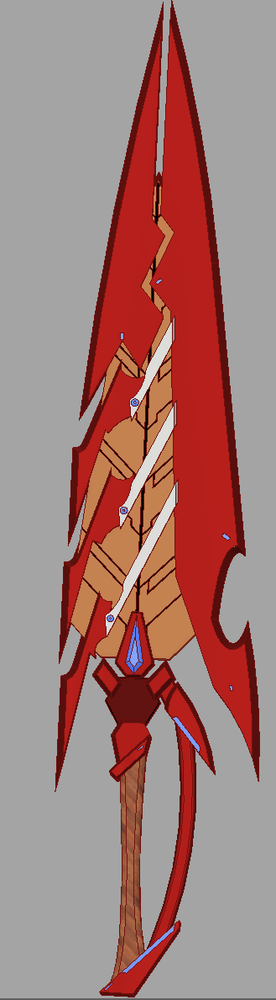
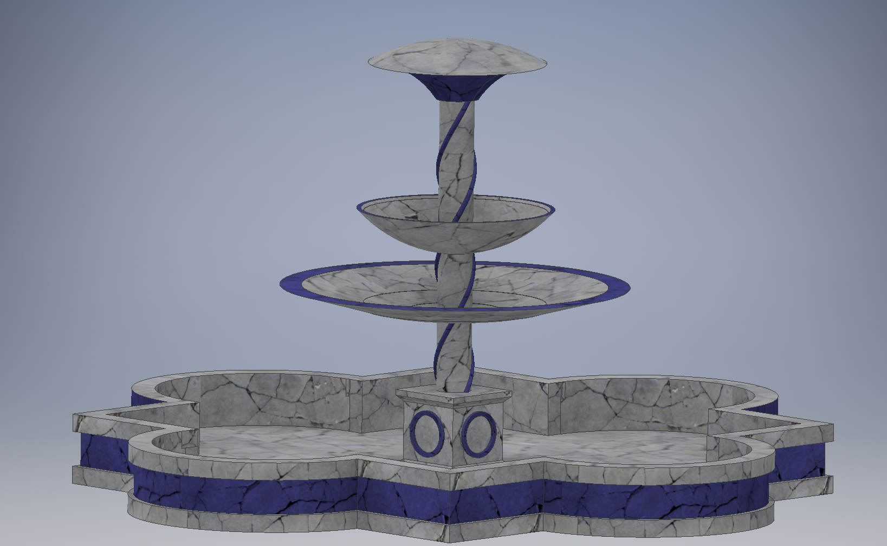
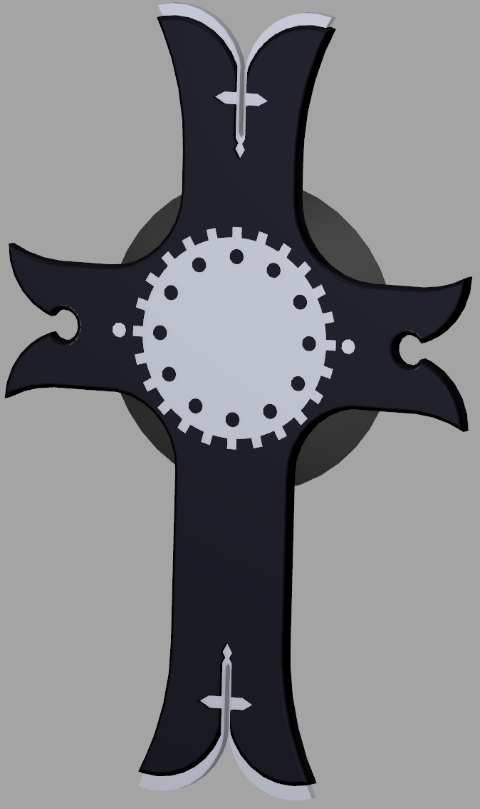
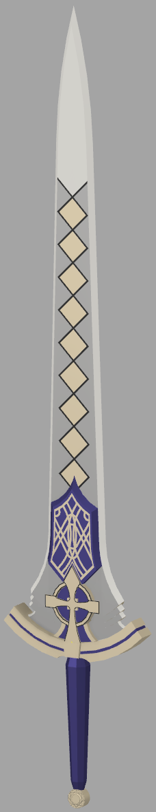

In my spare time, one of my favoritte things to do is to try to learn some new software that might look interesting. That is how I ended up picking up a copy of Autodesk Inventor, a 3D modeling software designed for engineering and prototyping. I stated to use it in order to mkae model some of the equipment that my party used in a Dungeons and Dragons campaign I used to run. After the campaign ended, I began to use it to make some of the weapons from video game franchises, to try to give some more life to the game, and for my own satisfaction as well. Through this, I have become fairly experienced in the software.
The Aegis is one of the 3 main Blades from the videogame Xenoblade Chronicles 2, and probably one of my projects that gave me the most trouble, as curves and sharp edges tend to not act nice together.
This fountain was one that I made back in Highschool for an engineering project that was never followed up on, despite all the work I put into modeling it. It's one of my proudest works, having gone through upwards of a dozen revisions before being scrapped along with the project.
The Lord's Ire and The Divine Light are a pair of sword and shield that I made for a D&D campaign that I ran a while ago. while They were modeled after a similar pair from the video game Fate/Grand Order, I have added my personal flare to it in order to have it fit in better with the world of the campaign.
 